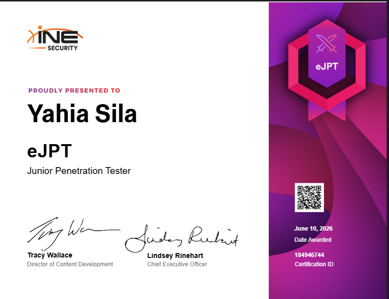
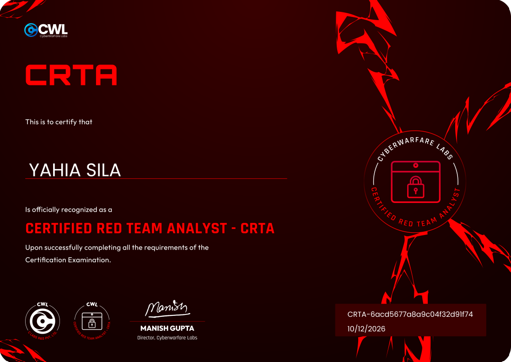

whoami
0xsila · junior penetration tester · Lille, France
I break web apps and APIs, report what I find on HackerOne, and write up how I found it. I also design and build CTF challenges. This page is where all of that lives.
Looking for a 3-month internship from April 2027 in cybersecurity, networks or systems.


silayahia7@gmail.com · linkedin.com/in/0xsila · hackerone.com/0xsila